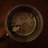
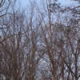
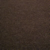

Minutes
Well, I've been working the last few hours on my last Spring Break Blog. I didn't want to use the Blogger template. I wanted to stay old school with this one. It's the last break, so it has to be special.
I didn't think I'd be Blogging so early. I thought I'd make an entry tomorrow afternoon, for sure, but early Sunday morning? Yeah, well, something special happened Saturday, and I already signed off of Blogging for the week, and I'm anxious to say something about what happened. So, that's why I'm here.
Marilia called me from Chile. She one of my only friends abroad (besides the immaculate parking maid Jerm) who's has ever called me. I mean, she wasted her precious calling card minutes to talk to me. I'm pretty sure she wasted two whole cards—I really hope it was worth it. Anyways, we talked about alot of things. It's not worth going into detail here. It just made me feel really special that she called. You could say it made my day.
Anyways, I've decided I'd be alittle artistic and maybe use some of my own photography to do the icons this week. I have to go take a picture for this little entry as soon as I'm done, so hopefully it will look all cool. Since it seems I'm taking a more enigmatic break this year, I figured my icons could be just as abstract. As a rule, these icons should somehow capture the visual mood of the day. We'll see how it goes.
So, I want to finish writing something else, but rest assured, I'll be back.
Fallen
Well, I've had a pretty uneventful weekend. I don't think it's a bad thing, though. I got alot done, website wise. I finished the Freshman Year Blog! Even cooler than that, if you click on the link, it takes you randomly to one of my modernized versions of my Freshman year blog templates. It's all pretty incredible, and I have to say, the Spring 2002 Internet Journal looks so freakin' amazing. It's addicting updating my website—especially when I make it look so good.
I decided not to go get my brakes fixed today. I've been really wiped out because of my recent cold. I just sort of bummed around until I decided to go put in 4 miles around Athens. That was pretty successful. Then I did some weight training, which made me feel so much better. I really hate being sick.
I still don't know if a road trip will be in order this week. It's possible I might be possessed to go to Sarasota, but it doesn't seem likely now. I'll have to get my brakes fixed Wednesday, and that doesn't leave much time for a quick trip south. Who knows, though. Maybe if I get some company, I'd go.
Tomorrow, I'm going to see Jen, and she's going to show me the campus of her school. I'll probably get some dinner with my aunt. Should be alot more interesting than toolin' around here and watching lesbian programs on the tube (though I'd rather be bored at home than anywhere else).
Oh, and today's icon comes from a picture I tried to take of the sun setting on some trees. Unfortunately, I was a fool and tried to zip up my jacket while I was biking down Cedar Shoals, and I wiped out on my bike and fell into a ditch. If you happened to see it while driving by, it would be extremely funny. Gotta say, though, it didn't feel good.
Ok, maybe something more interesting tomorrow. Later.
Too Tired, and Too Late
I know I've been bad with the lack of posting this break. I've been busy, what can I say. On Tuesday, i went to see Jennifer in Marietta. She ordered a laptop last week and she had just got it in the mail. It's kind of funny seeing Jennifer with a laptop—I'm the laptop child! Well, needless to say, it's nice—very nice. I wish I had the foresight to get a laptop with a Pentium M processor. The screen might be slightly smaller, but the battery life is to die for. Also, it's so light. It makes my beloved laptop look like quite the piece. That's just so depressing. The worst part: it cost less than my laptop did! What a crock.
After Jen finished up some project, we finally got to get out of her stuffy house and go downtown. She showed me her school, Bauder College. It was pretty small, especially compared to UGA. I guess that's not much of a surprise. They had alot of computers though, that was pretty hard to believe.
After that, Jen and I went to Best Buy to get her a laptop bag. I looked for some CDs. Why is it that no one has New Order's 2001 album "Get Ready"? And what is the Flaming Lips album before "Soft Bulletin"? Well, they didn't have either, so I didn't get to waste any money (which was probably a really good thing). I did rip my original Buffy album (Jen had stolen it) and I got Maroon 5's "Songs About Jane." Is that a bad album? Is that too "main stream"? It may not be Russian Pop music, or Japanese Pop, but it's catchy. I ran to some of it today. Not bad.
After Best Buy, Jen and I got dinner with my aunt. She suggested that I apply with Turner Broadcasting for employment overseas in Buenos Aires. That would rock so much, I would love to work out of the country for one or two years. They also have employment opportunities in San Francisco and New York. Both would be nice, but I think those locales may be on the menu in a few years. Cost of living is so much, of course. Oh, and the rest of the evening...Girl Scout cookies, dead computer battery, and Robots. Oh, yes, and it was contrived and boring. What did you expect?
Today, I finally got the brakes on my car fixed. That cost me about $540. What a surprise. Mom's going to help me, thankfully. I also finished up the first half of my sophomore journals. That was a pain in the ass, I wrote way too much in the Fall of 2002. Some of that was unnecessary. Hopefully Spring 2003 won't be as long-winded. I think I was depressed then, so either I bitched about it alot, or I got all avoidy, and instead made lots of cryptic entries. Wait, was that Spring 2003, or Fall 2004? Well, thankfully, I don't have to do Senior Year for a while to come. But in the mean time, enjoy the Sophomore Year Blog!
And, yah, I'll link to it when I'm done! So there! Ok, back to work.
The Past
I guess this break will go down as the least interesting. I am glad I got some time off, it was a little unnatural though. I think I'll feel better in a few days, once I get back into the swing of things.
I did accomplish one thing this break. I finished my Freshman Blog and my Sophomore Blog. These are nifty little retrospectives into the depths of my more horrendously written internet journal. Back in the day, I didn't know the difference between a stylesheet and the HTML header. I did have the patience this week to go back and fix a few things, so maybe reminiscence won't be plagued by browser errors. My favorite make-over would be my Spring 2002 set of journals. I almost wish it was my theme this go around, but we all like flowers, don't we? Please check all this stuff out, I worked very diligently on all of it.
Yesterday and today consisted of running. Wednesday consisted of running too, of course, so you could say I adopted the theme of running for this break. I'm running my plush tooshie into oblivion! Genevieve said she noticed I had slimmed down a bit. I don't think I have been fat or anything, but running gives me a good charge of self-esteem, something that doesn't go around often. Today I was able to do a 5 mile circuit despite an aching knee and the threat of shin splints! I don't think it was that bad, but I did walk more toward the beginning, but I finished with a good sprint. I'll probably do the same circuit on Monday.
Well, I'm glad this whole Spring Break thing is over. Now I can focus on getting a job, finishing this dismal semester, and getting the hell out of dodge. For now, I'm going to consider eating the ice cream I have in my fridge. I've earned it, haven't I? I hope so.
I'll see you all later when I have something interesting to Blog! So buzz off!